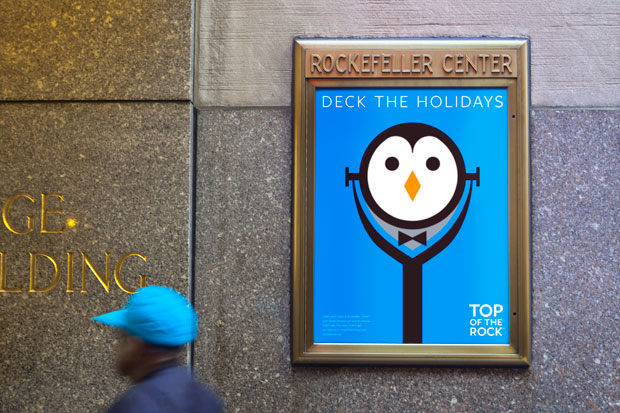

Branding & Identity
Deck the Holidays
-

-

- 
I’m proud to have had the chance to design the holiday campaign for Top of the Rock and Rockefeller Center with Michael Gericke (partner in charge) and Kelly Sung.
Pepsi


My team at Pentagram (Michael Gericke’s) recently finished the design of this gate for Pespi at Metlife Stadium, to celebrate the Super Bowl in New Jersey. We designed a three story vinyl graphic, complete with a typographic pattern of football related phrases, 2 large bottle sculptures created from the Pepsi logo, and various banners throughout the gate.
Custom Typography
Raleway

Raleway is an elegant sans-serif typeface, designed in a single thin weight. It is a display face that features both old style and lining numerals, standard and discretionary ligatures, a pretty complete set of diacritics, as well as a stylistic alternate inspired by more geometric sans-serif typefaces than it's neo-grotesque inspired default character set.
Orbitron

Orbitron was designed so that graphic designers in the future will have some alternative to typefaces like Eurostile or Bank Gothic. If you’ve ever seen a futuristic sci-fi movie, you have may noticed that all other fonts have been lost or destroyed in the apocalypse that led humans to flee earth. Of course Orbitron could also be used on the posters for the movies portraying this inevitable future.
Web Apps & Musings
clipping.us

Clipping.us is an easy way to paste snippets of text from one computer to another without any login information or registration. Just type anything after clipping.us/ like clipping.us/test, paste your snippet, hit save. Then access it from any other computer using the same url. Afterwards you can delete it, change, or leave it.
rel="logo"
rel="logo" is a proposed standard for serving and maintaining up-to-date logos for use in various media. By including a line of code on your site that links to a scalable vector logo, you make it very easy for other websites, applications, readers, clients, and stations to ensure that they are using an approved logo directly from you.